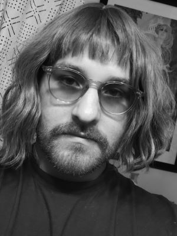

Zachary Bauer has been photographing for nearly a decade. He grew up in rural Indiana, where he developed a passion for capturing the natural countryside and dense forestation. He later developed and appreciation for more urban settings as a result of his many family vacations to Chicago. Zack plans of moving toward Portraits as his newest venture, and is looking for interested participants.
